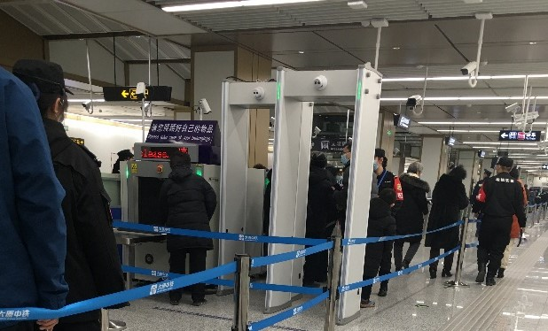
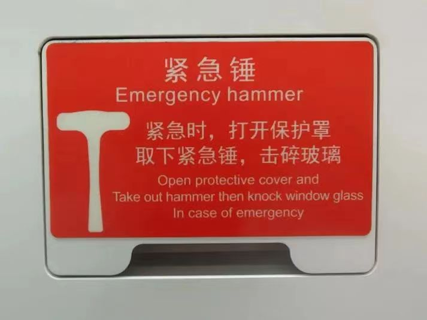
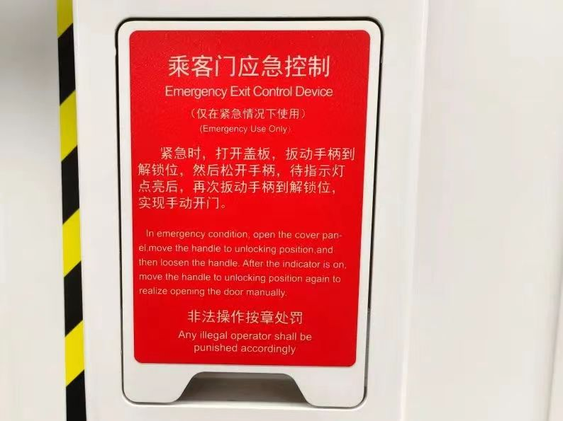
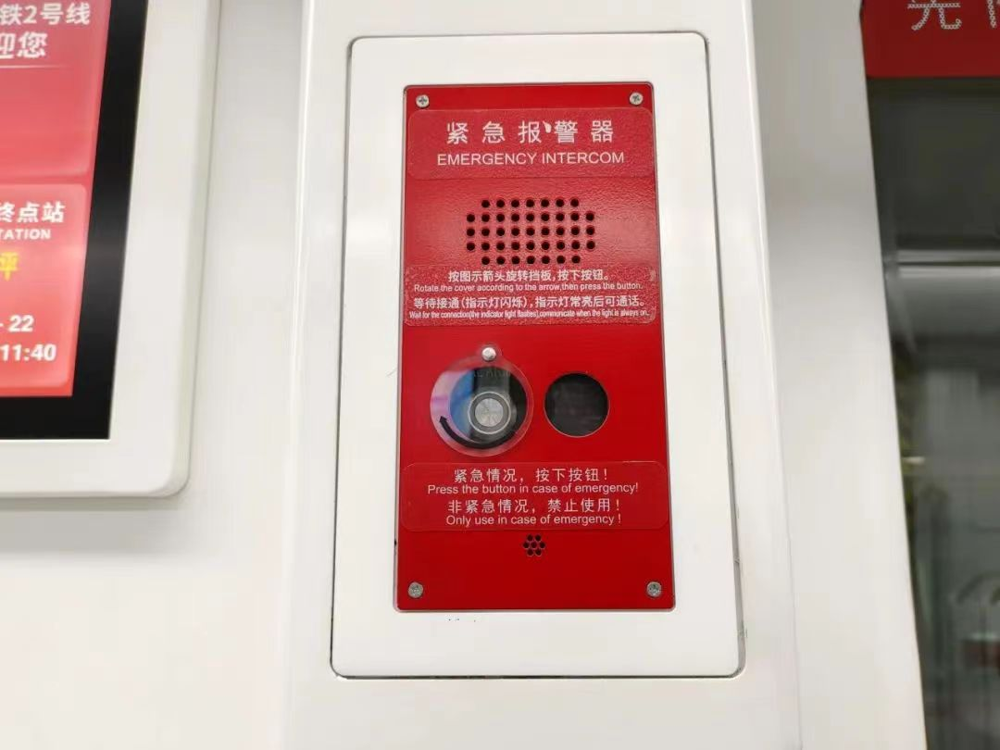
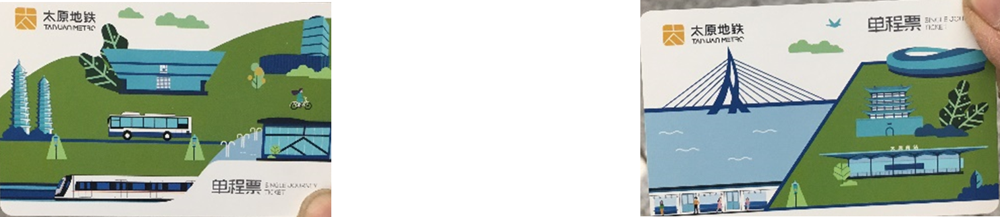

太原地铁乘车指南（1.0）

卡农（钢琴版）
太原是中国煤业大省——山西的省会城市，2020年12月26日，随着地铁2号线的开通，太原城市交通自此开启了地铁时代。目前太原地铁仅2号线一条线路，里程约23km。太原地铁线路如下图：
线路对应标识色的官方色号及对应参考色值：
2号线 RGB（255，0，0）
太原地铁2号线全线车站装修主题为“寻梦晋阳”，造型提取中国古建筑结构和色彩元素，以“暖黄灰”作为空间主要色彩格调，在保证简洁大气的前提下于细节处展现当地特色文化。全线23座车站按照装修类型分为10座特色站、9座标准站及4座裸装站。
10个特色站（涧河站、大北门站、府西街站、开化寺街站、大南门站、长风街站、南中环站、晋阳街站、龙兴街站、龙城公园站）：提取中国仅存于山西省境内的四处唐代建筑的造型特点和色彩元素，一站一景，赋予山西特色、太原特色文化。
太原地铁2号线113个出入口设计原则以“太”字为基本造型，府城外采用标准设计，府城内结合城市风貌实现“一站一景”。

乘车安全性十分重要，这里介绍相应安全乘车保障措施，在乘客乘车时需要留意。
安全检查（简称安检）是乘客乘坐地铁的必要环节。所有带包的乘客，不论包的大小都必须放入安检机进行透视检查，如果携带有液体则需拿给安检人员查验。安检处还有安检门用于检查乘客身上是否携带有违禁品。除此以外，车站安检工作人员也会使用安检工具随机检查乘客身上是否携带有违禁物品。当乘客遇到工作人员示意检查身上物品时，需要予以配合。
太原地铁全线车站均配备有除颤仪、医疗器材，在乘客突发疾病时可以及时应对处理。车厢内有紧急停车按钮、灭火器、紧急呼叫装置等器械，保障乘客乘车安全。
   
乘客在通过安检后需要通过闸机进站，而在到达目的地时也需要通过闸机出站，两者均需要客票验证。太原地铁支持诸多进出闸机验票方式，总体来讲分为四种：单程票、实体刷卡、二维码扫描和面容扫描。这四种方式均为右侧刷卡或扫描，左侧进出闸机。
单程票可以在人工窗口或购票机等处购买，购买时不仅支持现金，也支持使用支付宝、微信等常用移动支付手段。进站时在右侧闸机处刷卡，左侧进站；到达目的站后将车票投入右侧出站闸机即可从闸机左侧出站。如果单程票的面额不足以支付对应行程费用，则需要在票务中心补票。
单程票是国有资产，需要回收反复使用，因此乘车时需要妥善保管，且原则上不能带出车站（以下拍摄用票已交予地铁站作回收处理）。
太原地铁支持办理成人地铁卡、学生卡等多种卡片。进站和出站时，分别在进、出闸机上对应位置刷卡即可。

在手机客户端下载太原地铁官方App（听景），并绑定微信、支付宝或银联信用卡即可扫描二维码乘车。

该方法不需要给App内部充值，也不收取押金，直接通过大众熟悉的常用渠道扣款。需要特别注意的是，由于二维码本身包含有用户个人的信息，因此会随时自动更新。乘客不可使用二维码屏幕截图来进出闸机，也不建议在非进出闸期间长期暴露二维码于亮屏状态，以免泄露个人信息。
太原地铁支持面容扫描乘车。太原地铁面容扫描可作为单程票售卖，须在单程票售卖机购买车票并录入人脸信息，也可在听景APP录入人脸直接过闸。使用时站在可以刷脸的闸机前以正常仪态正对屏幕，待系统在短时间内识别面容信息后，闸机便可打开，乘客此时可以直接通过闸机。需要注意的是，佩戴口罩的乘客不必摘下口罩即可完成面容扫描。目前太原地铁各车站均支持面容扫描。
太原地铁按里程计价，具体价格如下表：
不过需要特别注意的是，进站时间限制在120分钟（即2小时）之内，否则超过此时间长度出站将会按照最高票价收费，因此乘客需严格把握好在站内的乘车时间。
太原地铁票务优惠包括以下内容：
如果想要快捷、有效地乘坐列车和使用地铁设施，就有必要事先了解23个地铁车站的基本要素信息。这里介绍车站类型、方向信息、站台结构等几方面内容，而后续的出行指南说明也与其密切相关。
太原地铁目前无换乘站。
太原地铁现有车站均为地下车站，站厅位于站台的上方，站台门为自底至顶的屏蔽门。

太原地铁现无大小交路、会库车、大站快车，在此不作介绍。终点站对于地铁具有重要意义，因为一条非环线线路的方向必须由该线路的终点站在各个站统一确定，这对于乘车以及寻找车内必要设施（如自动扶梯、直梯、卫生间等）具有重要意义。太原地铁线路的方向如下：
太原地铁站台目前均为岛式站台。此外还将介绍其它常见站台结构，以供读者参考。
岛式站台结构示意图如下（图中绘有人形象的位置是可以穿行的站台区域，粗黑线表示站台门，栅格线是铁轨，后同）：

右轨行驶的列车到达岛式站台时，一般左侧的车门会打开。岛式站台的优势是明显的。如果需要到对侧乘车，只需直接穿过站台到对面即可；并且自动扶梯、无障碍直梯、楼梯等设施只需要设计一套。太原地铁站台目前均为岛式站台。
侧式站台结构示意图如下：
侧式站台的铁轨位于中部，站台位于两侧，两个方向站台不直接相通。因此在乘车前一定要看清方向，否则必须从上层或下层绕行至对面。列车到达侧式站台时，一般右侧的车门会打开。太原地铁站台目前无侧式站台。
将以上站台类型加以组合就可以形成各种复合站台。
太原地铁均设置有男女卫生间，均位于车站的收费区域。
太原地铁2号线卫生间分布在尖草坪方向的站台端部。
太原地铁目前仅可与城市公共交通汽车接驳，太原公交公司还专门开行了轨道交通接驳专线。在出口附近可以看到如下的地图，该地图上明确标注出轨道交通车站周边的公交站名称、位置分布及对应的公交车线路号。需要换乘公交车的乘客可以提前查询需要换乘的公交车线路号，然后乘坐地铁到达对应车站后可以查到接驳公交站的具体位置。

轨道交通接驳专线如下表：

太原地铁诸线路首末班时刻表如下所示（数据来源为对应官方网站），乘客可以根据自身出行情况加以参考。此外，遇节假日或其他一些特殊活动时段，轨道交通首末班车会有一定的变化，具体时刻表在太原地铁官方网站、微信公众号均会及时发布，乘客可以随时留意。

目前以地铁为代表的城市轨道交通已经在多个城市普及，而太原地铁未来将会为市民出行提供了极大的便利。本文通过细致、深入的考察，汇总出以上乘车指南，旨在为乘客在出行时提供较为完备的参考。
太原地铁1号线也已经在建，建成后将联通太原火车站、太原南站、太原机场等太原重要交通枢纽。未来几年，还会有多条地铁线路陆续开通运营，而老吴也将继续进行细致的考察与汇总。地铁已经让这座城市焕发出新的活力，我们一起期待着它未来的发展！
附：太原地铁2025+规划图
往期回顾：
太原地铁乘客守则